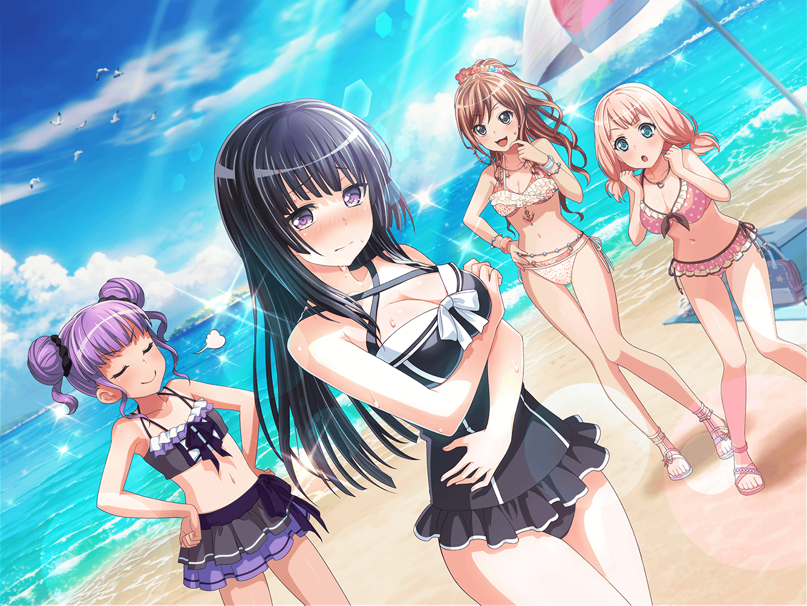

ショッピングモール
ひまり
燐子さんの水着選びのお手伝いができるなんて、うれしいです♪
今日は私、張り切っちゃいますね！
リサ
アタシもまさか燐子から買いもののお誘いを受けるなんて
思わなかったから、すっごくうれしい♪
まかせといてね！ アタシとひまりで超似合うやつ選ぶから♪
燐子
は……はい……よろしく……お願い、します……
リサ
ふっふっふ～♪
燐子
な……なん、ですか……？
リサ
前から思ってたんだけどさ、
燐子ってかなりスタイルいいよね？
アタシの目はごまかせないよ～
ひまり
あ、たしかに！
意識して見てみると、すっごくスタイルいい！
リサ
アタシ、そういう人の水着考えるの、好きなんだよね～♪
だから、今日、チョー楽しみで！
燐子
そ……そんなことは……
別にスタイル……よくないです…………
リサ
ふふ、ホントのことなんだからテレなくてもいいのに～
燐子
うぅ…………
リサ
よ～し、それじゃあ、
今日、別の用事でこれなかったあこがひっくり返っちゃうくらい、
すごい水着を選んじゃお～！
ひまり
おお～！
燐子
………………

ショッピングモール 水着売り場
リサ
水着売り場に到着～♪
まずは、色から選んでいこうか？
ひまり
はい、わかりました！
リサ
燐子に似合う色は、やっぱ黒だと思うんだよね～！
スタイルがよくて色白だからさ、
黒でバシッと決めるのがいいと思う！
リサ
このマネキンみたいにさ、
濃い色を使うと、スタイルもより際立つし？
ひまり
う～ん……でもでも、燐子さんなら、
かわいいピンク系だって着こなせると思うんですよね～
ひまり
そういうわけで……じゃーんっ！ このマネキン見てください！
燐子さんがこういう淡い色を身につけたら、
絶対上品に決まりますって！
燐子
く……黒……？ ピンク…………？
リサ
じゃあ、デザインは？ 何タイプが似合うと思う？
アタシはビキニタイプを推すね！
ひまり
ここはむしろワンピースタイプじゃないですか？
燐子さんみたいにスタイルがいい人こそ
ワンピースだと思うんですよ～
燐子
び……ビキニ……？ ワンピース………………？
リサ
いやいや、このスタイルを活かすんなら、
絶対ビキニだって～。
ね、燐子？
ひまり
ワンピースですって～。
そうですよね、燐子さん？
燐子
え……そ……その………………
リサ・ひまり
さあ、どっちがいい！？
燐子
え……あ…………あ、あぅぅ……………………
リサ
え…………り、燐子！？
あ、頭から湯気が出てるっ？ しっかりして～！
リサ
大丈夫、燐子？
ごめんね……
燐子のペース考えずに、ガンガン言っちゃって……
ひまり
燐子さんの水着を選びに来てたのに、
燐子さんを置いてけぼりにしちゃいました……反省です……
燐子
い……いえ……わたし、こそ……
せっかく、選んでもらってるのに……すみません、でした……
こ、今度はちゃんと……選んで…………
リサ
ううん、無理しなくていいよ。
今度は燐子のペースで、
燐子が気に入った水着を探していこ？ ……ね♪
３０分後
燐子
お……お待たせ……しました……
お会計……終わり、ました……
リサ
お疲れさま♪
よかったね、気に入った水着を見つけられて
燐子
お……おふたりが……
色々……教えて、くれた……おかげ……です……
リサ
あはは、その結果、
ぐいぐい自分達の意見を押し付けちゃったけどね……
燐子
い……いえ……もう……気にしないで……ください……
今日は……ほんとうに……ありがとう、ございました……
リサ
ありがとう、燐子。
そう言ってもらえると、助かるよ♪
リサ
ところで、結局、どんな水着を選んだの？
見せるのはずかしいから、お会計終わるまで待って、って
言ってたけど……
燐子
は……はい……あの場で……見せるのは……
はずかしかったんですけど……
い……今なら……少し、落ち着いた……から……
燐子
…………これ、です……
ひまり
わぁ、かわいい黒いワンピースだ～！
燐子さんっぽくて、すごくステキです！
リサ
アタシ達の意見を半分ずつ取ってくれたんだね。
ありがとう、燐子！
ひまり
これを着た燐子さん見るの、楽しみだなぁ～！
週末が待ち遠しい～。
あこちゃんもビックリ間違いなしですよ！
リサ
うん、そのとーり☆
燐子。海、一緒に楽しもうね！
燐子
は、はい…………！